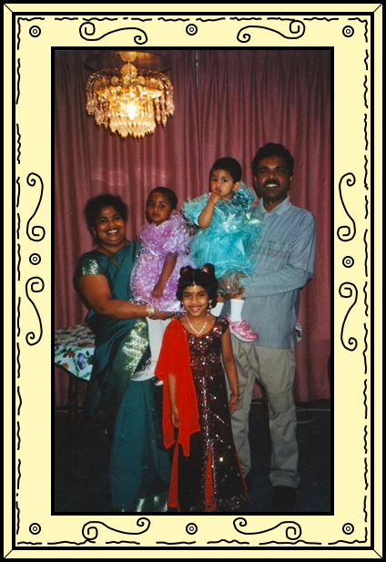
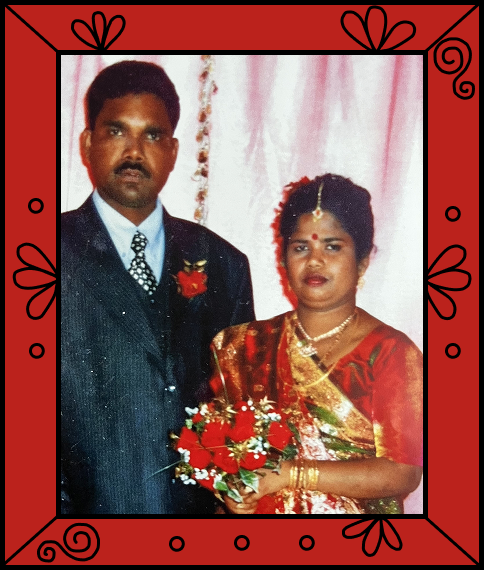
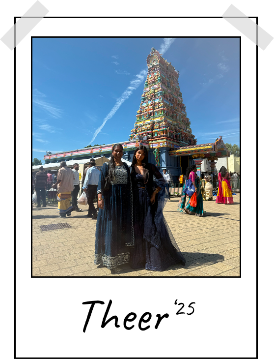
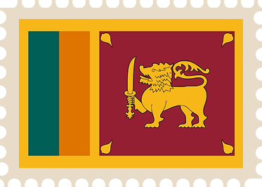
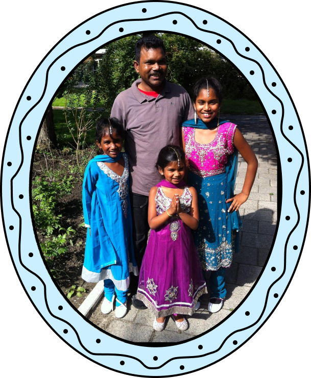

Mijn verhaal
Waarom dit onderwerp belangrijk is voor mij
Ik heb dit onderwerp gekozen omdat ik door mijn situatie vaak heb nagedacht over mijn eigen culturele identiteit. Doordat ik niet bij mijn familie ben opgegroeid, merkte ik dat ik veel traditionele dingen anders heb meegemaakt dan anderen met dezelfde afkomst. Ik voelde me soms te buitenlands voor Nederlanders, maar tegelijkertijd te Nederlands voor mensen met een buitenlandse achtergrond.
Kleding werd voor mij een manier om toch verbinding te voelen met mijn cultuur. Vooral na het verlies van mijn moeder voelde het alsof ik ook een stukje van mijn verbinding met haar kwijt was. Door meer kleding uit mijn cultuur te dragen, kreeg ik het gevoel dat ik die verbinding met haar en met mijn achtergrond weer een beetje terugvond.

Foto met mijn familie
Identiteit en ergens bij horen
Doordat ik niet bij mijn ouders ben opgegroeid, ben ik heel Nederlands opgevoed. Tegelijkertijd merkte ik dat mijn uiterlijk en achtergrond niet altijd aansloten bij hoe ik mezelf zag of hoe anderen mij zagen. Ik voelde me daardoor soms tussen twee werelden staan. In mijn Nederlandse omgeving voelde ik me anders door mijn afkomst, maar wanneer ik bij mijn familie en hun cultuur was, voelde ik me soms juist te Nederlands.

Mijn ouders
Feestdagen en culturele momenten waren vaak momenten waarop ik die verbinding wel sterk voelde. Dan merkte ik weer hoeveel betekenis mijn cultuur voor mij heeft en begon ik mijn achtergrond steeds meer te omarmen.

Het jaarlijkse Theer festival
Meer hetzelfde dan verschillend
Door mijn eigen ervaringen ben ik me steeds meer gaan afvragen hoe cultuur zich eigenlijk verplaatst. Mensen nemen wanneer ze verhuizen, reizen of migreren delen van hun cultuur mee naar een nieuwe omgeving. Dat zie je terug in bijvoorbeeld kleding, eten en tradities.

Sri Lanka
Wat mij hierin vooral opvalt, is hoeveel overeenkomsten er tussen culturen bestaan. Wanneer ik met vrienden over onze achtergronden en feestdagen praat, blijkt regelmatig dat we vergelijkbare tradities hebben, maar ze op een andere manier vieren. Daardoor ben ik me steeds meer gaan interesseren in wat culturen met elkaar gemeen hebben, in plaats van alleen in wat ze van elkaar onderscheidt.

traditionele kleding
Kleding als verbinding
We zijn allemaal gevormd door verschillende plekken, mensen en culturen, maar dat betekent niet dat we daardoor minder met elkaar gemeen hebben. Voor mij gaat verbondenheid daarom niet alleen over weten waar je vandaan komt, maar ook over ontdekken wat je met anderen deelt. In plaats van steeds te kijken naar wie ergens wel of niet bij hoort, vind ik het interessanter om te kijken naar wat ons met elkaar verbindt.